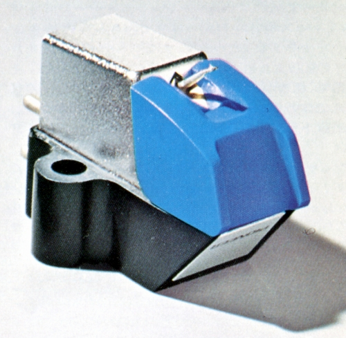
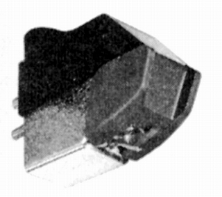
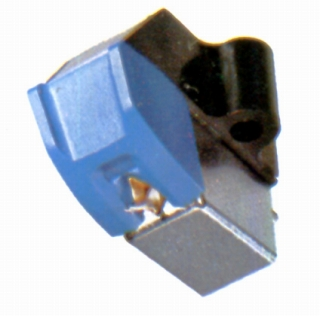

PC-110



■価格 5,500円
■発電方式 MM型
■出力電圧 3.5mV
1kHz/5cm/sec
■針圧 1.8〜2.5g（最適
2.2g）
■再生周波数帯域 15-25,000Hz±3dB
■チャンネルセパレーション 25dB/1kHz
20dB/100-15,000Hz
■チャンネルバランス 1.5dB以内(1kHz)
■コンプライアンス 20×10-6cm/dyne（スタチック）/8.5×10-6cm/dyne（水平
ダイナミック）
■負荷抵抗 30〜100kΩ
■直流抵抗 500Ω
■出力インピーダンス 2.5kΩ
■針先 0.5mil
接合型ダイヤ
■自重 5.7g
■交換針 PN-110
■発売 1968年1月
■販売終了
1976年頃
■備考 垂直トラッキング角 20度
価格は1973年頃のもの
1974年には6,500円 交換針 PN-110
2,400円
外経0.6�o、肉厚40μのアルミ軽合金カンチレバー
振動系実効質量0.82mg
パイオニアのインデックスへ